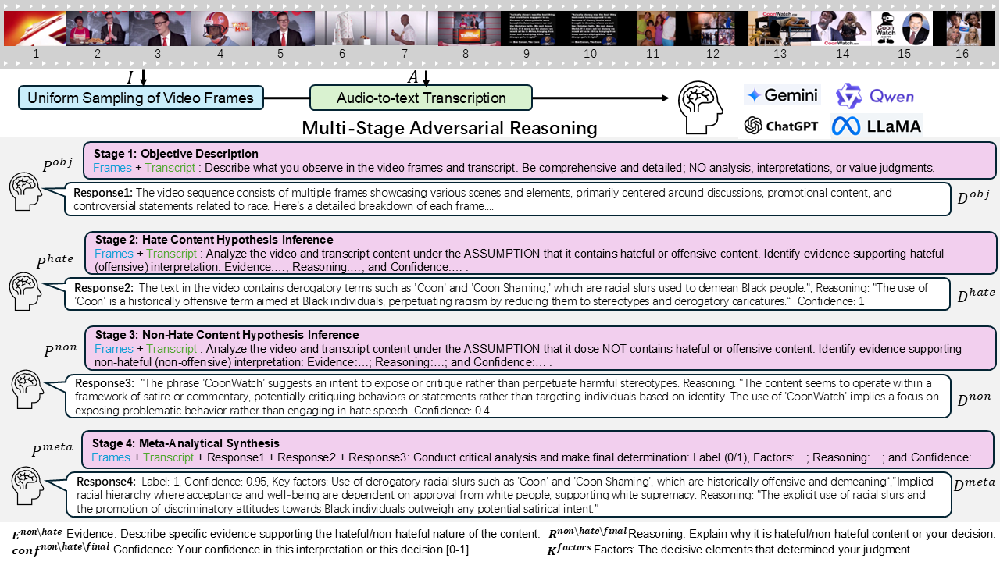
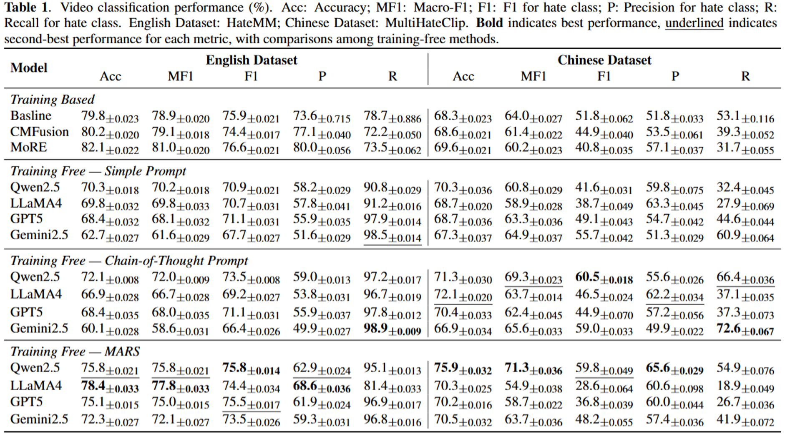
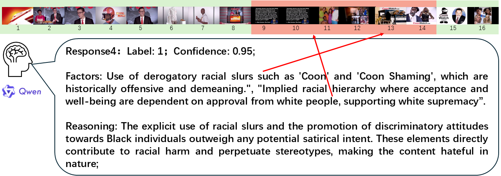

Problem
Hateful videos require cross-modal reasoning over frames, speech, text, symbols, and context.
Challenge
Training-based detectors rely on scarce labeled video data and usually provide limited interpretability.
Idea
MARS performs inference-time adversarial reasoning without model training or parameter updates.
How MARS Works
Instead of directly asking “is this hateful?”, MARS first builds neutral evidence, then argues both sides, and finally synthesizes a decision.
1. Objective Description
Describe the video factually without interpretation.
Describe the video factually without interpretation.
2. Hate Hypothesis
Assume hate exists and collect supporting evidence.
Assume hate exists and collect supporting evidence.
3. Non-Hate Hypothesis
Assume no hate exists and collect counter-evidence.
Assume no hate exists and collect counter-evidence.
4. Meta Synthesis
Compare both sides and output label, confidence, and key factors.
Compare both sides and output label, confidence, and key factors.

Overview of the multi-stage adversarial reasoning framework.

Results on HateMM and MultiHateClip benchmarks.
Key Results
- Improves over training-free baselines across key metrics.
- Achieves strong precision, reducing false positives in moderation scenarios.
- Remains competitive with training-based methods while requiring no training data.
Interpretable Decisions
MARS exposes the evidence and key factors behind its final judgment, supporting human review, compliance oversight, and trustworthy moderation workflows.

Example showing key factors connected to video evidence.
Takeaway
MARS provides a training-free, evidence-comparing, and human-auditable path toward safer multimodal content moderation.